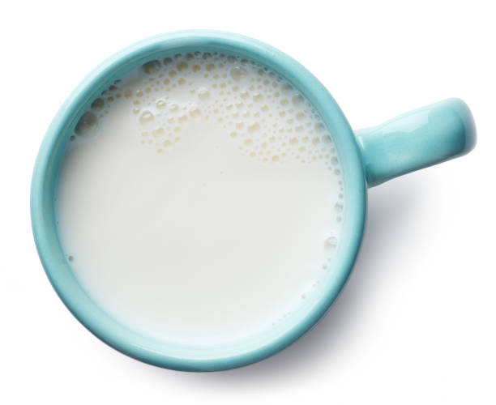
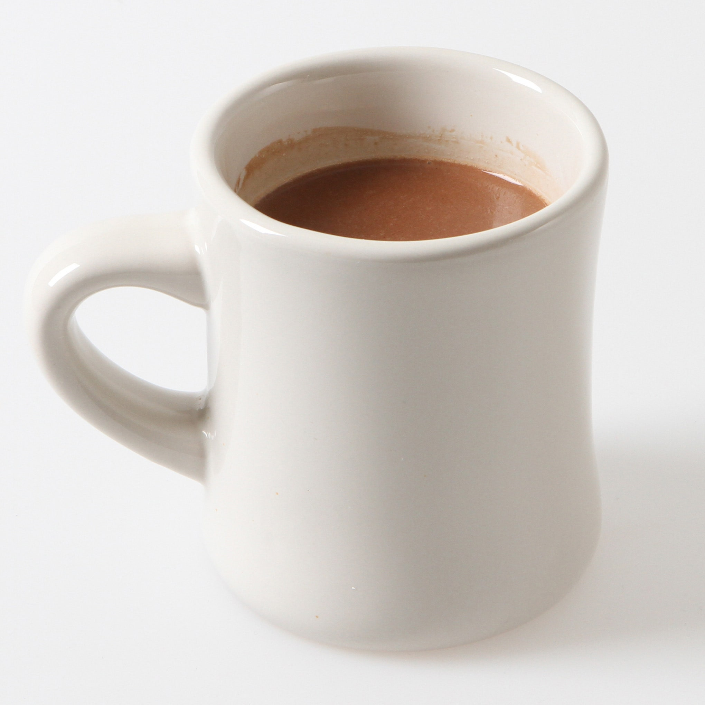

- Milk
- Cocoa Powder
- Whipped Cream
- Marshmallows
Step 1
Get your favorite mug and fill it with milk. Make sure to leave some room for the cocoa powder and toppings! Warm the milk for 1 and a half minutes on full power.

Step 2
Pour desired amount of cocoa powder in the hot milk and stir until the
powder is fully dissolved.
The amount of cocoa powder you use will depend
on what brand you have and how sweet you like your cocoa.

Step 3
Add your favorite toppings (whipped cream and/or marshmallows)!